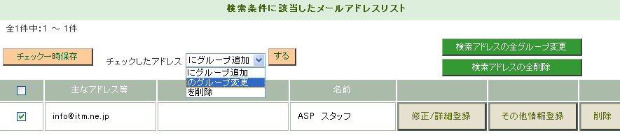
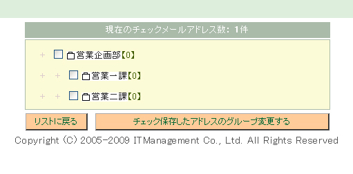
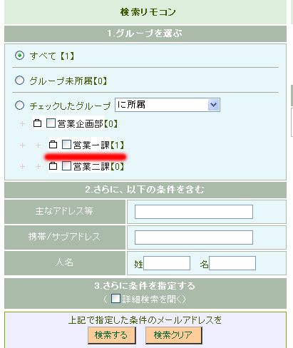

１、メールアドレスをグループに振り分ける
グループを登録すると、メールアドレスを振り分けることができます。
グループの振り分けは「メールアドレス検索／一括削除」から行うことができます。
表示されたメールアドレスにチェックを入れ、上段メニューの「チェックしたアドレス『のグループを変更』する」を選びます。

グループのリストがでてくるので、変更先グループを指定します。

『チェック保存したアドレスのグループを変更する』を押して、
変更先のグループの件数が増えていれば、変更完了です。
